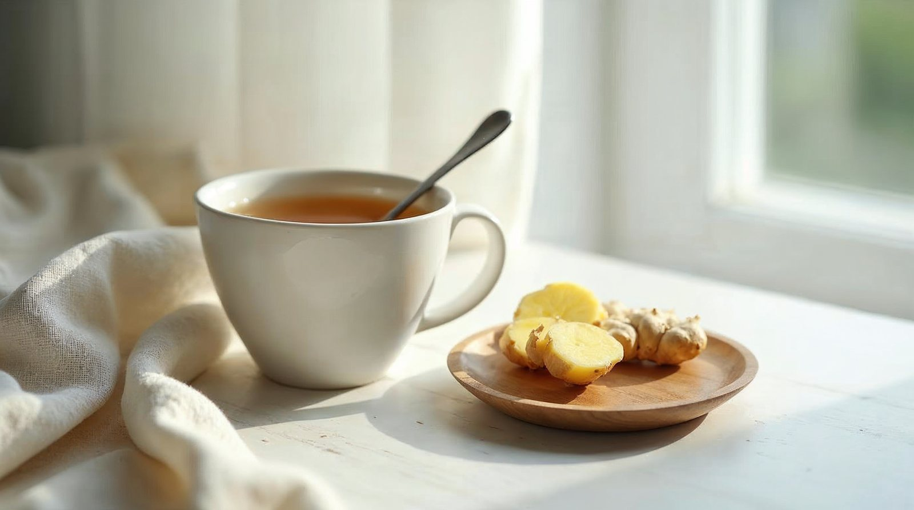
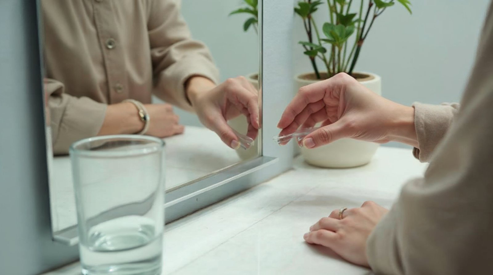
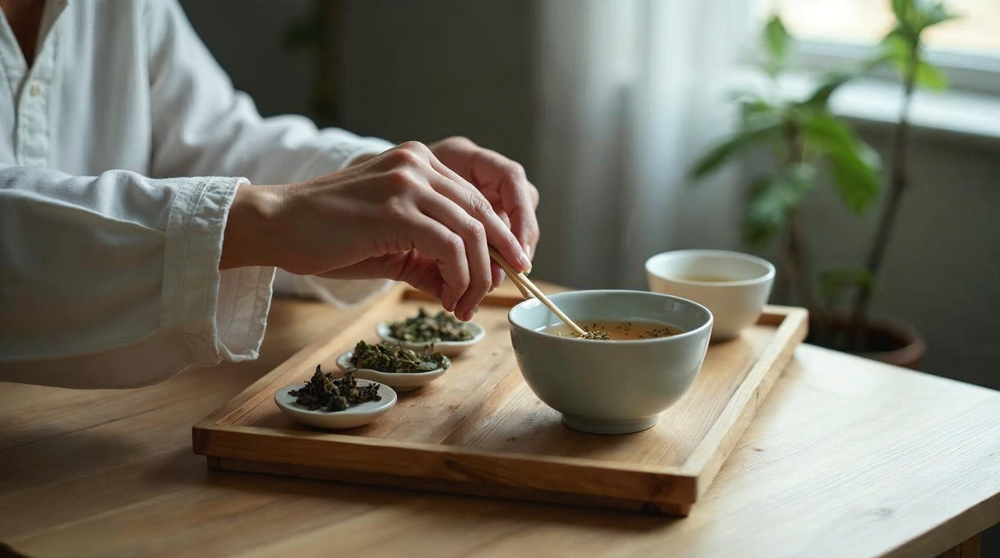
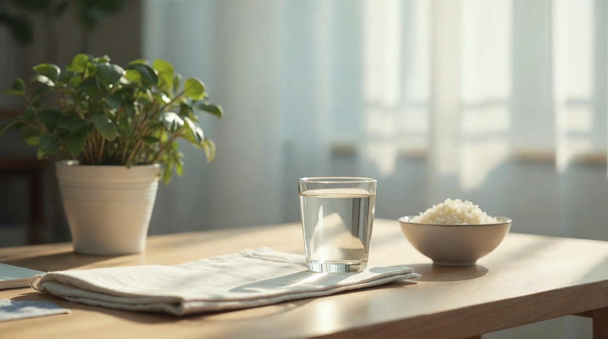
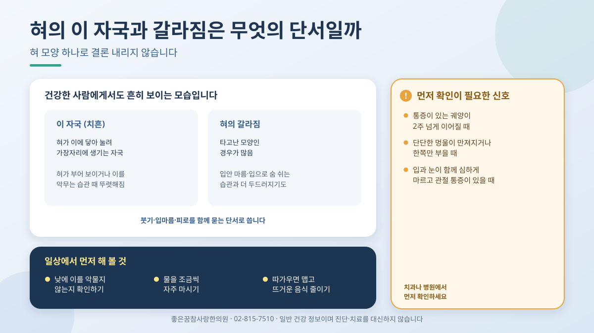

이종호 한의사 감수좋은꿈참사랑한의원 대표원장 (한의사 면허번호 19769)발행 2026-11-23 · 수정 2026-11-26
이 글의 차례
- 왜 이런 모습이 생길 수 있나요
- 이 자국과 갈라짐은 어떻게 다른 단서인가요?
- 이 자국이 짙어지는 날은 언제인가요?
- 붓기와 혀 자국은 어떻게 이어서 보나요?
- 턱의 긴장과 이 악묾은 어떻게 살펴보나요?
- 입마름과 갈라짐이 함께 있을 때 해 볼 것
- 변화를 남기고 싶다면 이렇게 찍어 보세요
- 비슷해 보이는 다른 모습과 어떻게 구분하나요?
- 아이와 어르신은 무엇을 더 감안하나요?
- 이 자국이 신경 쓰일 때 식사는 이렇게 바꿔 보세요
- 자주 하는 오해
- 예를 들면 이런 경우입니다
- 먼저 이렇게 여쭙니다
- 일상에서 먼저 해 볼 수 있는 것
- 한의원에서 함께 살필 수 있는 경우
- 스스로 점검해 보세요
- 첫 방문 때는 이렇게 살핍니다
- 혀 자국과 함께 여쭙는 다른 몸의 신호
- 다시 오셨을 때는 이렇게 이어서 봅니다
- 며칠 지켜보고, 언제 상담하나요?
- 이렇게 기록해 오시면 상담이 쉬워집니다
- 이런 증상은 먼저 확인이 필요합니다
- 함께 읽으면 좋은 글
혀 옆의 물결 같은 이 자국(치흔)과 혀 가운데의 갈라짐은 건강한 사람에게서도 흔히 보이는 모습입니다. 한의원에서는 이를 병의 증거로 보기보다 혀의 크기와 물기, 평소 몸이 붓거나 입이 마르는지를 함께 묻는 참고 단서로 씁니다. 통증 없는 모습이라면 그 자체를 치료 대상으로 보지 않는 경우가 많습니다.
왜 이런 모습이 생길 수 있나요
- 혀가 입안에서 이에 닿아 눌리면 가장자리에 자국이 남는데, 혀가 부어 보이거나 이를 악무는 습관이 있을 때 더 뚜렷해지기도 합니다.
- 잠잘 때 입을 다무는 자세나 턱의 긴장도 이 자국에 영향을 줄 수 있습니다.
- 혀의 갈라짐은 타고난 모양인 경우가 많고, 입안이 마르거나 입으로 숨 쉬는 습관과 함께 더 두드러지기도 합니다.
- 한의학에서는 이런 모습을 몸의 수분, 붓기, 피로와 함께 살피는 단서로 봅니다.
이 자국과 갈라짐은 어떻게 다른 단서인가요?
혀 가장자리의 물결 같은 자국은 혀가 이에 눌려 생기는 모습이라, 그날그날의 붓기와 턱의 긴장에 따라 짙어지기도 옅어지기도 합니다. 아침에 뚜렷하다가 오후에 흐려지는 분도 많습니다. 그래서 이 자국은 비교적 최근의 몸 상태와 습관을 여쭙는 단서로 씁니다.
혀 가운데의 갈라짐은 타고난 모양인 경우가 많아 하루 사이에 크게 바뀌지 않습니다. 오래전부터 있었다면 그 자체보다는, 갈라진 곳이 따갑거나 입이 마르는 불편이 함께 있는지가 더 중요합니다.
한의학에서는 이 자국을 몸에 물기가 정체되거나 기운이 처지는 쪽과, 갈라짐을 진액이 부족하거나 열감이 있는 쪽과 이어 보기도 합니다. 다만 이 연결은 질문의 방향일 뿐이라, 말씀과 맥이 같은 쪽을 가리킬 때만 무게를 둡니다.
이 자국이 짙어지는 날은 언제인가요?
같은 사람이라도 이 자국이 유난히 짙어 보이는 날이 있습니다. 생활 속에서 흔히 겹치는 상황은 이렇습니다.
- 전날 밤 라면이나 찌개처럼 짠 음식을 늦게 먹고 물을 많이 마신 다음 날 아침
- 오래 앉아 일해서 저녁에 다리가 붓고 몸이 무겁게 느껴지는 날
- 생리 전처럼 몸이 쉽게 붓는 시기
- 마감이나 시험을 앞두고 낮에도 이를 꽉 다물고 지낸 날
- 잠을 설쳐 피곤이 쌓인 주의 후반
이런 날에만 자국이 짙어진다면 혀 자체보다 그날의 붓기와 긴장을 살피는 것이 실제 생활에 도움이 됩니다. 기록을 해 보시면 내 경우 어떤 날에 짙어지는지가 보입니다.
붓기와 혀 자국은 어떻게 이어서 보나요?
한의학에서는 몸에 물기가 고르게 돌지 못하고 한쪽에 머무는 상태를 붓기와 무거움으로 느낀다고 보고, 혀가 부어 이 자국이 짙어지는 모습을 그 단서 가운데 하나로 여깁니다. 그래서 자국이 신경 쓰인다고 하시면 아침과 저녁의 붓기를 꼭 여쭙니다.
예를 들어 아침에 눈두덩과 손가락이 붓고 반지가 빡빡하다가 오후에 풀린다면, 혀 자국도 같은 흐름으로 움직이는 경우가 많습니다. 저녁에 종아리가 붓고 양말 자국이 깊게 남는다면 하루 동안 앉아 있는 시간과 걷는 양을 함께 봅니다.
붓기는 짠 음식, 늦은 식사, 부족한 움직임, 잠의 질이 겹칠 때 쉽게 생깁니다. 혀 자국은 그중 무엇이 겹쳤는지 되돌아보게 해 주는 작은 신호로 쓰시면 좋습니다.
턱의 긴장과 이 악묾은 어떻게 살펴보나요?
이를 악무는 습관은 스스로 알아차리기 어렵습니다. 대부분 가족에게 이를 간다는 말을 듣거나, 아침에 턱이 뻐근하고 관자놀이가 묵직해서 알게 됩니다.
- 입술은 가볍게 닫고 위아래 이는 살짝 떨어뜨린 상태가 편한 자리입니다.
- 혀끝은 윗앞니 뒤쪽 잇몸에 가볍게 대 두면 이를 다무는 힘이 덜 들어갑니다.
- 컴퓨터 화면 모서리에 작은 표시를 붙여 두고, 볼 때마다 턱 힘을 빼 보세요.
- 잠들기 전 따뜻한 수건으로 턱과 볼을 잠시 덮어 긴장을 풀어 보세요.
며칠만 해 보셔도 낮 동안 얼마나 자주 이를 다물고 있었는지 알게 되는 분이 많습니다. 아침 턱 뻐근함과 혀 자국의 변화를 함께 적어 두시면 상담 때 쓸모가 큽니다.
입마름과 갈라짐이 함께 있을 때 해 볼 것
- 물은 한 번에 많이 마시기보다 한두 모금씩 자주 마셔 보세요.
- 커피와 술은 입안을 더 마르게 할 수 있어 양을 조금 줄여 보세요.
- 겨울에는 침실에 가습기를 두거나 젖은 수건을 걸어 공기를 촉촉하게 해 보세요.
- 코가 막혀 입으로 숨을 쉰다면 코 상태도 함께 살펴보세요.
갈라진 곳이 따가운 날은 맵고 짜고 뜨거운 음식을 피하고, 미지근한 음식으로 드시면 한결 편합니다. 입마름이 약과 관련 있을 수 있다면 약은 그대로 드시면서 처방한 곳에 여쭤 보세요.
변화를 남기고 싶다면 이렇게 찍어 보세요
혀 자국이나 갈라짐의 변화를 보고 싶으시다면 일주일에 두세 번, 아침 같은 시간에 창가의 자연광에서 플래시 없이 찍어 보세요. 혀는 힘을 빼고 내밀고, 휴대전화와 얼굴 사이 거리도 늘 비슷하게 맞춥니다.
사진 옆에 전날 저녁 메뉴와 잠든 시각, 아침 붓기 정도를 한 줄씩 적어 두면 사진만 있을 때보다 훨씬 많은 이야기를 할 수 있습니다.
비슷해 보이는 다른 모습과 어떻게 구분하나요?
- 원래 혀가 크거나 치아 배열이 좁으면 붓기와 상관없이 자국이 늘 보일 수 있습니다.
- 혀 표면이 군데군데 매끈하게 벗겨져 지도처럼 보이는 모습은 갈라짐과는 다른 모습이라 따로 여쭙니다.
- 날카로운 치아나 맞지 않는 보철물에 계속 쓸린 자리는 자국보다 상처에 가까워 치과 확인이 먼저입니다.
- 입안이 전체로 말라 혀 표면이 거칠어진 경우에는 갈라짐이 실제보다 깊어 보이기도 합니다.
어떤 모습인지 헷갈린다면 거울로 한쪽만 보지 말고 양쪽 가장자리와 가운데를 차례로 살펴 두셨다가 진료 때 말씀해 주세요.
아이와 어르신은 무엇을 더 감안하나요?
아이는 혀가 입안에 비해 커 보이는 시기가 있고, 이가 빠지고 새로 나는 동안 치아 배열이 바뀌면서 가장자리 자국이 생겼다 사라지기도 합니다. 그래서 아이 혀의 자국은 성장 과정과 식사, 잠을 함께 놓고 가볍게 봅니다.
어르신은 침이 줄고 드시는 약이 늘어 입마름이 잦아지면서 갈라짐이 더 깊어 보이거나 따갑게 느껴지기 쉽습니다. 틀니가 혀에 닿는 자리에 자국이나 쓸린 자리가 생기기도 합니다. 그래서 어르신께는 틀니 상태와 약, 하루 물 마시는 양을 먼저 여쭙습니다. 보호자와 함께 오시면 평소 식사 모습도 함께 들려주세요.
이 자국이 신경 쓰일 때 식사는 이렇게 바꿔 보세요
- 국물 요리는 건더기 위주로 드시고 국물은 반쯤 남겨 보세요.
- 저녁 식사는 잠들기 3시간 전쯤 마치고, 야식은 줄여 보세요.
- 하루 물은 목마를 때 몰아서보다 시간을 나눠 고르게 마셔 보세요.
- 식사 뒤 바로 눕기보다 10분쯤 천천히 걸어 보세요.
이렇게 1~2주 지내며 아침 혀 자국과 붓기를 함께 비교해 보세요. 한꺼번에 다 바꾸기 어렵다면 한 가지부터 시작해도 괜찮습니다. 생활을 바꾼 뒤 자국이 옅어지는 분도 있고, 원래 모양이라 그대로인 분도 있습니다. 어느 쪽이든 그 결과가 다음 상담의 좋은 출발점이 됩니다.
자주 하는 오해
- 이 자국이 있으면 몸이 많이 약하다는 뜻이라고 여기기 쉽지만, 건강한 분에게서도 흔히 보입니다.
- 갈라진 혀는 치료해서 메워야 한다고 생각하기 쉽지만, 불편이 없다면 그 모양 자체를 바꾸려 하지 않습니다.
- 자국이 하루 만에 옅어졌으니 다 해결됐다고 여기기 쉽지만, 붓기와 긴장에 따라 오르내리므로 며칠의 흐름을 봅니다.
- 갈라진 틈에 음식이 끼는 것이 걱정돼 세게 닦는 분이 있지만, 부드럽게 헹구는 정도로 충분합니다.
예를 들면 이런 경우입니다
- 예를 들어 하루 종일 앉아서 일하는 사무직이 저녁마다 다리가 붓고 아침에 혀 자국이 짙다고 하는 경우, 저녁 식사의 짠맛과 하루 걷는 양을 먼저 여쭙습니다.
- 예를 들어 시험을 앞둔 수험생이 아침에 턱이 뻐근하고 혀 가장자리 자국이 뚜렷하다고 하는 경우, 공부하며 이를 악무는지, 밤에 이를 가는지 함께 확인합니다.
- 예를 들어 입이 자주 마르는 어르신이 혀 가운데 갈라진 곳이 따갑다고 하시는 경우, 드시는 약과 하루 물 마시는 양, 틀니 상태를 먼저 여쭙습니다.

먼저 이렇게 여쭙니다
- 몸이 자주 붓거나 무겁게 느껴지나요?
- 입안이 자주 마르거나 잠을 설치나요?
- 이를 악물거나 이갈이를 한다는 말을 들은 적이 있나요?
- 혀의 갈라진 곳이 맵고 뜨거운 음식에 따갑나요?

일상에서 먼저 해 볼 수 있는 것
- 낮에 이를 악물고 있지 않은지 틈틈이 확인하고 턱 힘 빼기
- 물을 조금씩 자주 마셔 입안이 마르지 않게 하기
- 갈라진 곳이 따가울 때는 맵고 뜨거운 음식 줄이기
- 짠 음식과 늦은 야식을 줄여 아침 붓기를 살펴보기

한의원에서 함께 살필 수 있는 경우
- 몸이 자주 붓고 무겁게 느껴질 때 수분 섭취와 식사 습관, 활동량을 함께 여쭙니다.
- 입안이 자주 마르고 잠을 설칠 때 수면 환경과 호흡 습관을 함께 살핍니다.
- 이를 악무는 습관이나 턱이 뻐근한 느낌이 있을 때 자세와 긴장을 함께 살핍니다.
좋은꿈참사랑한의원에서는 모든 분께 맥부터 짚으며 붓기, 입마름, 잠의 상태를 여쭙고, 필요하다고 판단될 때 설진을 함께 참고합니다. 혀 모양 하나로 결론을 내리지 않고 상담 내용과 맞춰 본 뒤 침이나 한약 상담 등 상태에 맞는 방법을 정합니다.
스스로 점검해 보세요
- 아침에 혀 가장자리 자국이 오후보다 뚜렷하다
- 저녁이 되면 다리나 손이 붓는 날이 일주일에 여러 번 있다
- 아침에 일어나면 턱이 뻐근하거나 이가 시큰하다
- 낮에 이를 다물고 있는 자신을 자주 발견한다
- 혀 가운데 갈라진 곳이 맵거나 뜨거운 음식에 따갑다
- 입안이 자주 마르고 물을 찾게 된다
해당하는 항목이 있다면 진료 때 함께 말씀해 주세요. 체크 결과만으로 몸 상태를 판단하지는 않습니다.
첫 방문 때는 이렇게 살핍니다
첫 방문에는 원장이 맥을 짚으며 혀 모습이 신경 쓰인 시기와 함께 붓기, 입마름, 잠, 소화, 대소변, 몸의 온기를 여쭙습니다. 이어서 밝은 곳에서 혀를 편하게 내밀어 주시면 가장자리 자국과 가운데 갈라짐, 혀의 크기와 물기를 짧게 봅니다.
턱이 뻐근하거나 이를 악무는 습관이 있다면 그 이야기도 함께 듣습니다. 이렇게 모은 단서를 놓고 생활에서 먼저 해 볼 것과 오늘 할 치료를 설명드리며, 다음 진료에서는 혀 모습과 붓기의 변화를 이어서 비교합니다.
혀 자국과 함께 여쭙는 다른 몸의 신호
이 자국이 짙은 분께는 붓기 말고도 몇 가지를 함께 여쭙습니다. 식사 뒤 유난히 졸리거나 몸이 처지는지, 대변이 묽거나 무른 날이 잦은지, 비 오는 날 몸이 더 무거운지 같은 것들입니다.
한의학에서는 이런 신호가 이 자국과 함께 있을 때 소화와 물기의 흐름을 더 살펴볼 단서로 봅니다. 반대로 이런 신호 없이 자국만 있다면 원래 혀 모양이나 이를 다무는 습관 쪽을 먼저 생각합니다.
갈라짐이 있는 분께는 입마름과 함께 밤잠, 오후의 열감, 손발이 화끈거리는지를 여쭙습니다. 이렇게 함께 있는 신호를 모아 보면, 같은 혀 모양이라도 사람마다 살필 방향이 달라지는 이유를 이해하실 수 있습니다.
다시 오셨을 때는 이렇게 이어서 봅니다
다음 진료에서는 처음 오셨을 때의 혀 모습과 그사이 생활 기록을 나란히 놓고 봅니다. 짠 음식을 줄였는지, 턱 힘을 빼는 연습을 해 보셨는지, 아침 붓기는 어땠는지를 듣고 혀 자국의 변화를 비교합니다.
갈라짐은 천천히 바뀌는 모습이라 한두 번의 진료로 달라지기를 기대하기보다, 따가움과 입마름 같은 불편이 어떻게 지나가는지를 중심으로 봅니다. 기록이 쌓일수록 내 몸이 어떤 날 붓고 마르는지 스스로 알아차리기 쉬워집니다.
며칠 지켜보고, 언제 상담하나요?
- 통증이 없는 이 자국이나 갈라짐은 짠 음식과 늦은 식사를 줄이고 물을 고르게 마시며 1~2주 지켜볼 수 있습니다.
- 자국과 함께 붓기, 피로, 입마름이 2주 넘게 이어지거나 갈라진 곳이 계속 따갑다면 진료 때 상의해 보세요.

이렇게 기록해 오시면 상담이 쉬워집니다
- 붓기가 심한 시간대(아침, 저녁)와 그날 먹은 음식
- 입이 마르는 때와 하루 동안 마신 물의 양
- 이갈이나 코골이를 들었다면 그 내용
- 혀 갈라진 곳에 통증이 있다면 언제부터인지
이런 증상은 먼저 확인이 필요합니다
- 혀 가장자리의 헌 곳(궤양)이 아프지 않더라도 2주 넘게 낫지 않는 경우
- 혀에 단단한 멍울이 만져지거나 한쪽만 붓는 경우
이런 신호가 있으면 한의원보다 가까운 병원이나 응급실을 먼저 찾으세요.
함께 읽으면 좋은 글

여쭙는 것
- 몸이 자주 붓거나 무겁게 느껴지나요?
- 입안이 자주 마르거나 잠을 설치나요?
- 이를 악물거나 이갈이를 한다는 말을 들은 적이 있나요?
생활에서 해 볼 것
- 낮에 이를 악물고 있지 않은지 틈틈이 확인하고 턱 힘 빼기
- 물을 조금씩 자주 마셔 입안이 마르지 않게 하기
- 갈라진 곳이 따가울 때는 맵고 뜨거운 음식 줄이기
한의원에서 함께 살필 것
- 몸이 자주 붓고 무겁게 느껴질 때 수분 섭취와 식사 습관, 활동량을 함께 여쭙니다.
- 입안이 자주 마르고 잠을 설칠 때 수면 환경과 호흡 습관을 함께 살핍니다.
- 이를 악무는 습관이나 턱이 뻐근한 느낌이 있을 때 자세와 긴장을 함께 살핍니다.
먼저 확인이 필요한 신호
- 혀 가장자리의 헌 곳(궤양)이 아프지 않더라도 2주 넘게 낫지 않는 경우
- 혀에 단단한 멍울이 만져지거나 한쪽만 붓는 경우
한눈에 보는 표
| 구분 | 핵심 |
|---|---|
| 여쭙는 것 | 몸이 자주 붓거나 무겁게 느껴지나요? 입안이 자주 마르거나 잠을 설치나요? |
| 생활에서 해 볼 것 | 낮에 이를 악물고 있지 않은지 틈틈이 확인하고 턱 힘 빼기 물을 조금씩 자주 마셔 입안이 마르지 않게 하기 |
| 한의원에서 함께 살필 것 | 몸이 자주 붓고 무겁게 느껴질 때 수분 섭취와 식사 습관, 활동량을 함께 여쭙니다. 입안이 자주 마르고 잠을 설칠 때 수면 환경과 호흡 습관을 함께 살핍니다. |
| 먼저 확인이 필요한 신호 | 혀 가장자리의 헌 곳(궤양)이 아프지 않더라도 2주 넘게 낫지 않는 경우 혀에 단단한 멍울이 만져지거나 한쪽만 붓는 경우 |
자주 묻는 질문
이 자국이 있으면 몸이 안 좋은 건가요?
그렇게 단정하지 않습니다. 흔히 보이는 모습이며 다른 증상과 함께 종합해서 참고합니다.
혀가 갈라진 것은 치료해야 하나요?
증상이 없다면 그 자체를 치료 대상으로 보지 않는 경우가 많습니다. 입안 건조 같은 불편이 있을 때 생활 습관을 함께 살핍니다.
혀 모양은 하루 사이에도 달라지나요?
컨디션과 수분, 식사에 따라 조금씩 달라 보일 수 있습니다.
이를 악무는 습관이 있으면 자국이 더 짙어지나요?
혀가 이에 더 오래 눌리면 자국이 뚜렷해 보일 수 있습니다. 낮에 턱 힘을 빼는 연습과 함께 며칠 지켜보세요.
갈라진 곳에 음식이 끼면 어떻게 하나요?
식사 뒤 물로 가볍게 헹구는 정도면 충분합니다. 칫솔로 세게 문지르면 오히려 따가울 수 있습니다.
좋은꿈참사랑한의원은 재진 때 지난번 이야기부터 이어서 여쭙니다. 진료시간과 예약은 오시는 길에서 확인하세요.
어디서 상담받을 수 있나요?
좋은꿈참사랑한의원은 서울 동작구 만양로2길 2 신성빌딩 3층·5층(서울 동작구 상도동, 7호선 상도역 3번 출구 근처)에 있습니다. 한의사 3명(이종호 대표원장, 조영기 수석진료원장, 정원영 진료원장)이 진료합니다. 진료시간은 평일 09:30~20:00(점심 13:00~14:00), 토·일·공휴일 09:30~15:00이며, 방문 전 전화로 확인을 권합니다. 예약은 네이버 예약, 카카오톡 상담, 전화 02-815-7510로 받습니다.
이 글은 일반적인 건강 정보이며 개인의 진단이나 치료를 대신하지 않습니다. 증상이 있거나 복용 중인 약이 있다면 진료를 통해 확인하세요. 치료 효과는 개인마다 다를 수 있습니다.
작성 기준: 일반적으로 알려져 있는 건강 정보를 참고해 정리했습니다(대표원장 감수). 증상 기록은 1~2주 동안 하루 1회, 비슷한 시간에 적어 오시면 지난 상태와 비교하기 쉽습니다.